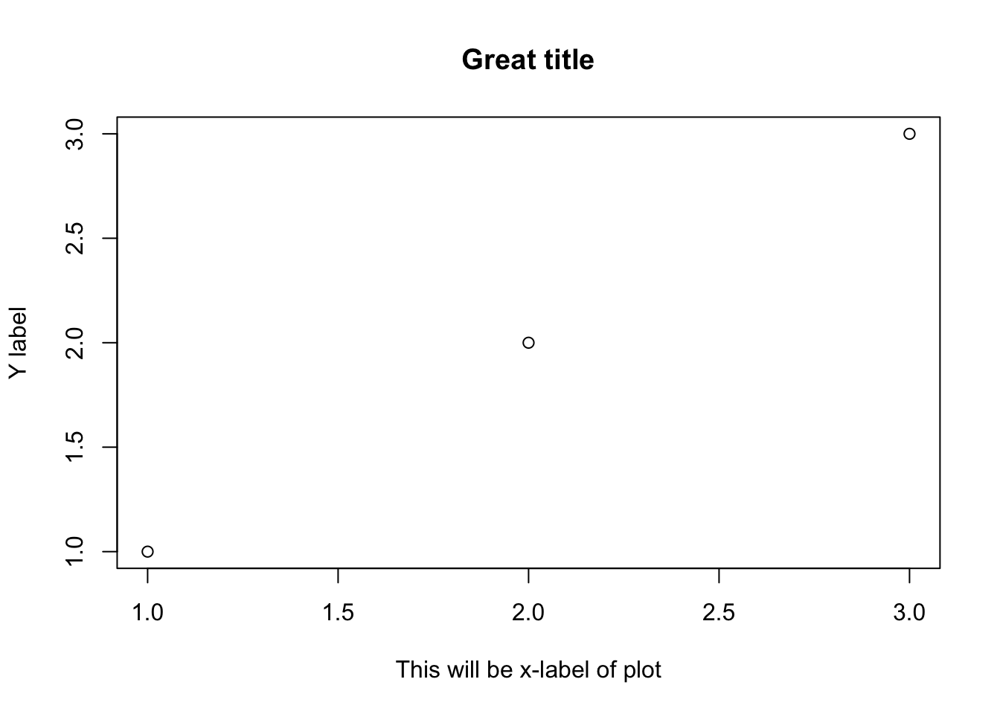

Functions & scripts
RaukR 2022 • Advanced R for Bioinformatics
Sebastian DiLorenzo, Markus Mayrhofer


Write programs that do one thing and do it well.
Write programs to work together.
Write programs to handle text streams, because that is a universal interface.
–The UNIX philosophy, Doug McIlroy
In this exercise we will write a few functions and execute R scripts from the command line and provide them with options and data.
1 R Functions
Let’s jump right in and create a function. Your function should have it’s own function_name, atleast two arguments one of which with a default value, code that performs some operations on the input and a return value. I do encourage you to think about it and make your own function, rather than copying the examples. Examples should be seen more as explanatory, semantic and inspirational.
Example:
function_name <- function(arg1, arg2 = "Lucy"){
if (arg2 == "Lucy") {
output <- paste("Lucy in the sky with ",arg1,"\n",sep="")}
else {
output <- paste(arg1," in the ocean with ",arg2,"\n",sep="")}
return(cat(output))
}Test your function to make sure it gives the output you would expect given different arguments.
- What happens if you don’t assign a value to the argument that does not have a default?
- Did I need to use the
return()function in my example? - Why does my example perform the
cat()function in thereturn()function? - Try assigning a variable to the return value of your function.
variable_a <- function_name("Tom")What happens to the variable if the return value is the output ofcat()?
Now lets see the power of your function in action. Write a loop that executes your function multiple times. Functions are great for performing operations on a number of files, objects or elements in objects that fit a certain condition.
Example
for (i in c("Tom","Mary","Mahesh","Henrik")){
function_name(arg1=i,arg2="Brad")
function_name(arg1=i,arg2="Lucy")
}## Tom in the ocean with Brad
## Lucy in the sky with Tom
## Mary in the ocean with Brad
## Lucy in the sky with Mary
## Mahesh in the ocean with Brad
## Lucy in the sky with Mahesh
## Henrik in the ocean with Brad
## Lucy in the sky with HenrikNow let’s take a look at the special ellipsis argument for functions. Basically the ellipsis say that a function can take additional arguments. The function should work without arguments given at the ellipsis. One great example of this is the data.frame() function.
From ?data.frame
Usage
data.frame(..., row.names = NULL, check.rows = FALSE,
check.names = TRUE, fix.empty.names = TRUE,
stringsAsFactors = default.stringsAsFactors())The ellipsis can be used to add columns to the data.frame. Try creating a data.frame with one column and one with several. Also, try creating a data.frame with no arguments for ..., what happens?
data.frame(a=c(1,2,3))
data.frame(a=c(1,2,3),b=c(4,5,6))Another example where ellipsis are often used is to pass plot arguments into a function.
Example:
my_plot <- function(...){
plot(c(1,2,3),c(1,2,3),...)
}
my_plot(main="Great title", xlab = "This will be x-label of plot", ylab="Y label")
Try creating your own function that uses ellipsis arguments.
2 R Scripts
While many R users write and execute code interactively (in e.g. RStudio), you can run the content of a script by writing source(myscriptfile.R) in the R console. This is also a convenient way to load your custom functions (and this is actually what happens when you load an installed package with library()).
But once you have code that works you may want to run it routinely without an interactive R environment. R scripts can be executed directly from the command line by typing Rscript myscriptfile.R.
- Make an R script that prints a summary of a sample (n=1000) from a normal distribution. Save it as a
.Rfile and execute it.
# Example of a small script
mydata=rnorm(1000)
print(summary(mydata))You can also execute your script by typing its name in the console, provided it:
- Starts with a hashbang line that instructs your system how to interpret it, e.g.
#!/usr/bin/env Rscript - Is an executable file e.g. through
chmod +x myscriptfile.Ron Unix systems. If you are on windows you are on your own =).
Task:
- Modify your script and run it without
Rscript. - Does it work without the path (e.g.
./)?
3 Passing and parsing arguments
It’s unlikely that you would need to run the exact same process over and over again without any change in what data is processed or how it’s processed. One way to control the behaviour of your code is to provide arguments to it. These commonly refer to file names or settings. You can supply arguments after the name of your script where you invoke it. In R, they are available from commandArgs().
- Let your script print the arguments. Run it with a few extra words or numbers and see what happens.
You can use commandArgs(trailingOnly = TRUE) to suppress the first few items and access your actual arguments.
- Make your script use the first argument provided as the mean of the normal distribution.
#!/usr/bin/env Rscript
firstarg=as.numeric(commandArgs(trailingOnly = TRUE)[1])
mydata=rnorm(1000,mean = firstarg)
print(summary(mydata))Processing multiple arguments may become complicated, especially if you want to be able to use C-like long and short flags such as -o outputfile -i inputfile --distribution normal. Packages that support such options include getopt, optparse and argparser.
- Use the
optparsepackage to modify your script to accept the argument-mor--mean(followed by the value) for mean value.
#!/usr/bin/env Rscript
# don't say "Loading required package: optparse" every time
suppressPackageStartupMessages(require(optparse))
option_list = list(
make_option(c("-m", "--mean"), default=0)
# you could put the next option here
)
options = parse_args(OptionParser(option_list=option_list))
my_mean=as.numeric(options$mean)
mydata=rnorm(1000,mean = my_mean)
print(summary(mydata))4 Standard in and out
A convenient feature of command line scripts is the possibility to pipe data from one script to another, thereby avoiding the need for intermediate files. You can use file('stdin') and open() to define and open the connection in R and readLines() to read one or more lines from it.
- Make your script parse the mean value from a text stream, and run it using the pipe e.g.
echo 100 | ./myscriptfile.R. - Using the same script, supply the mean from a text file (containing only that) with
cat. - Is it possible to read the input stream using
stdin()?
#!/usr/bin/env Rscript
input_con <- file("stdin")
open(input_con)
oneline <- readLines(con = input_con, n = 1, warn = FALSE)
close(input_con)
mean=as.numeric(oneline)
mydata=rnorm(1000,mean = mean)
print(summary(mydata))You can pipe your output to another process (any script or tool that accepts a stream) by appending | next_tool_or_script_call to the call, or to a file by appending > filename.
- What happens if a warning is generated by your script, e.g. with
warning('Something is wrong')and you pipe the output to a file? - Why?
You can use write(x,file=stderr()) or write(x,file=stdout()) to explicitly divert certain output.
5 Bonus challenges
If you have time, practice by writing an R script that you need in your own work, or select either of the following:
Write a script that parses any text stream by line from either a file (when specified) or stdin, and writes to either another file (when specified) or stdout. Each line is written with a certain probability which is also provided as an argument (lines that start with # are always written). Report to stderr the number of lines read and written. Try your script on any fastq, bam/sam, or vcf-formatted data.
Write a script that summarizes the content of a table contained in a plain text file. The table is supplied either as a file (when specified) or as a stream. Make sure any lines starting with # are ignored. For speed, do not use more than a maximum of 1000 lines as default, or another number if supplied as an argument. Try your script on any tabular data you have available.
6 Session info
## R version 4.1.2 (2021-11-01)
## Platform: x86_64-apple-darwin17.0 (64-bit)
## Running under: macOS Big Sur 10.16
##
## Matrix products: default
## BLAS: /Library/Frameworks/R.framework/Versions/4.1/Resources/lib/libRblas.0.dylib
## LAPACK: /Library/Frameworks/R.framework/Versions/4.1/Resources/lib/libRlapack.dylib
##
## locale:
## [1] en_US.UTF-8/en_US.UTF-8/en_US.UTF-8/C/en_US.UTF-8/en_US.UTF-8
##
## attached base packages:
## [1] stats graphics grDevices utils datasets methods base
##
## other attached packages:
## [1] bsplus_0.1.3 ggplot2_3.3.6 fontawesome_0.2.2 captioner_2.2.3
## [5] bookdown_0.26 knitr_1.39
##
## loaded via a namespace (and not attached):
## [1] highr_0.9 bslib_0.3.1 compiler_4.1.2 pillar_1.7.0
## [5] jquerylib_0.1.4 tools_4.1.2 digest_0.6.29 lubridate_1.8.0
## [9] jsonlite_1.8.0 evaluate_0.15 lifecycle_1.0.1 tibble_3.1.7
## [13] gtable_0.3.0 pkgconfig_2.0.3 rlang_1.0.2 DBI_1.1.2
## [17] cli_3.3.0 rstudioapi_0.13 yaml_2.3.5 xfun_0.31
## [21] fastmap_1.1.0 withr_2.5.0 dplyr_1.0.9 stringr_1.4.0
## [25] generics_0.1.2 sass_0.4.1 vctrs_0.4.1 tidyselect_1.1.2
## [29] grid_4.1.2 glue_1.6.2 R6_2.5.1 fansi_1.0.3
## [33] rmarkdown_2.14 purrr_0.3.4 magrittr_2.0.3 scales_1.2.0
## [37] htmltools_0.5.2 ellipsis_0.3.2 assertthat_0.2.1 colorspace_2.0-3
## [41] utf8_1.2.2 stringi_1.7.6 munsell_0.5.0 crayon_1.5.1Built on: 31-May-2022 at 20:26:35.
2022 • SciLifeLab • NBIS • RaukR